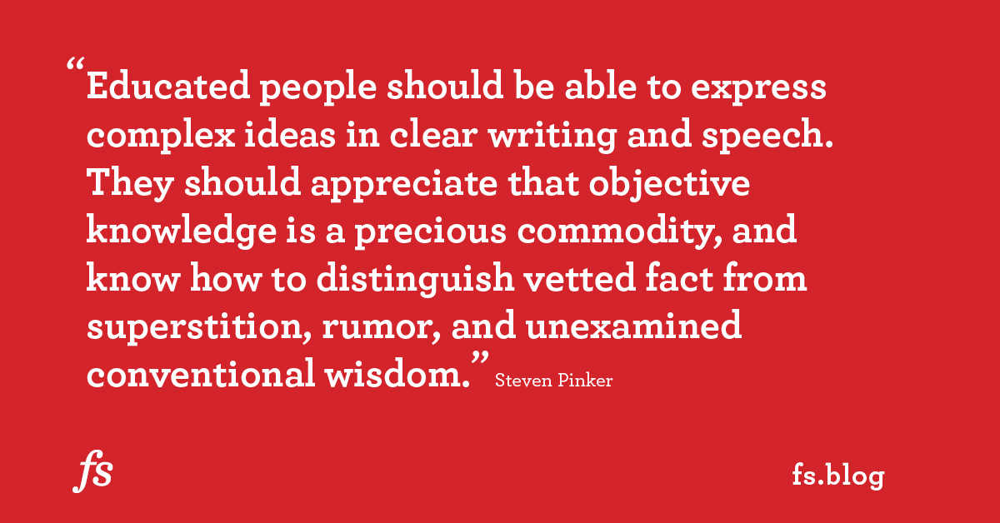
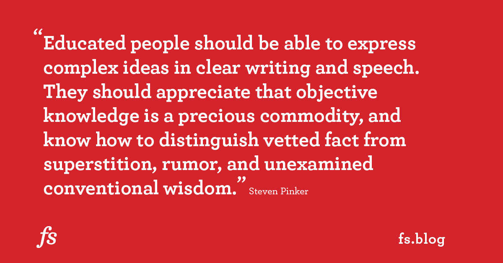

Aprendizaje Acelerado
MENTALIDAD: el aspecto más importante a la hora de aprender
¿Alguna vez has oído a alguien decir que se le dan bien las mates pero los idiomas no son lo suyo? Esto es una mentalidad fija, esto es creer que tus habilidades son innatas y no pueden ser mejoradas, en el espectro contrario encontramos una mentalidad de crecimiento, creer que puedes mejorar tus habilidades con esfuerzo y sacrificio, parece ser que las personas con una mentalidad de crecimiento tienen más éxito superando desafios. Es importante señalar que una persona puede tener una mentalidad de crecimiento para algunas cosas y no para otras, pensar que puedes mejorar en los deportes y en el ámbito academico pero que eres poco sociable y no puede mejorar en ese ámbito... Creemos que es fundamental conocer que tipo de mentalidad tenemos, puedes buscar Fixed vs Growth Mindset (Mentalidad fija vs Mentalidad de crecimiento) o te recomendamos Grit, de la psicóloga Angela Duckworth, donde se intenta responder a la pregunta qué distingue a las personas que triunfan de las que no en un amplio abanico de disciplinas (deporte, emprendimiento, investigación, industria...), también sirve como guía de como podemos cultivar una mentalidad de crecimiento en las personas que nos rodean y en nosotros mismos.
¿Alguna vez has oído a alguien decir que se le dan bien las mates pero los idiomas no son lo suyo? Esto es una mentalidad fija, esto es creer que tus habilidades son innatas y no pueden ser mejoradas, en el espectro contrario encontramos una mentalidad de crecimiento, creer que puedes mejorar tus habilidades con esfuerzo y sacrificio, parece ser que las personas con una mentalidad de crecimiento tienen más éxito superando desafios. Es importante señalar que una persona puede tener una mentalidad de crecimiento para algunas cosas y no para otras, pensar que puedes mejorar en los deportes y en el ámbito academico pero que eres poco sociable y no puede mejorar en ese ámbito... Creemos que es fundamental conocer que tipo de mentalidad tenemos, puedes buscar Fixed vs Growth Mindset (Mentalidad fija vs Mentalidad de crecimiento) o te recomendamos Grit, de la psicóloga Angela Duckworth, donde se intenta responder a la pregunta qué distingue a las personas que triunfan de las que no en un amplio abanico de disciplinas (deporte, emprendimiento, investigación, industria...), también sirve como guía de como podemos cultivar una mentalidad de crecimiento en las personas que nos rodean y en nosotros mismos.
Learning How to Learn
Aprendiendo a Aprender nos cuenta que dice la evidencia científica sobre el aprendizaje, ¿Algo que estudias en Física te puede ayudar a resolver problemas en el ámbito empresarial?, ¿Cuál es el papel de los neurotransmisores en el aprendizaje?, ¿Subrayar y los mapas mentales no sirven para nada?, ¿Cómo podemos crear conexiones neuronales?, ¿Cuáles son maneras efectivas de estudiar y cuáles no?

Aprendiendo a Aprender nos cuenta que dice la evidencia científica sobre el aprendizaje, ¿Algo que estudias en Física te puede ayudar a resolver problemas en el ámbito empresarial?, ¿Cuál es el papel de los neurotransmisores en el aprendizaje?, ¿Subrayar y los mapas mentales no sirven para nada?, ¿Cómo podemos crear conexiones neuronales?, ¿Cuáles son maneras efectivas de estudiar y cuáles no?
A Mind for Numbers
 Este libro está escrito por la instructora de Aprendiendo a Aprender, se extiende en los temas tocados en el curso...
Este libro está escrito por la instructora de Aprendiendo a Aprender, se extiende en los temas tocados en el curso...
Este libro está escrito por la instructora de Aprendiendo a Aprender, se extiende en los temas tocados en el curso...
Deep Work

Cal Newport cuenta como el mundo lleno de estimulos (Instagram, Twitter, YouTube, Netflix...) en el que vivimos puede estar afectando a nuestra capacidad para concentrarnos a la hora de estudiar/trabajar, si quieres sacarle más partido a cada sesión de trabajo este libro es para ti.
Cal Newport cuenta como el mundo lleno de estimulos (Instagram, Twitter, YouTube, Netflix...) en el que vivimos puede estar afectando a nuestra capacidad para concentrarnos a la hora de estudiar/trabajar, si quieres sacarle más partido a cada sesión de trabajo este libro es para ti.
The Art of Learning

Josh Waitzkin es un maestro internacional de ajedrez y competidor en artes marciales, de niño fue reconocido como prodigio, en este libro cuenta como dejo el ajedrez con 21 años, para sentirse un novato en una disciplina otra vez, y su camino hasta convertise en campeón del mundo de Tai Chi.
Josh Waitzkin es un maestro internacional de ajedrez y competidor en artes marciales, de niño fue reconocido como prodigio, en este libro cuenta como dejo el ajedrez con 21 años, para sentirse un novato en una disciplina otra vez, y su camino hasta convertise en campeón del mundo de Tai Chi.
Steven Pinker en cómo debería ser una educación multidisciplinar

Aprovecho este artículo sobre lo que Steven Pinker, psicólogo y lingüista, considera debe contener una educación multidisciplinar, para recomendar Farnam Street Blog donde Shane Parrish, ex-espía, comparte piezas de conocimiento de gran valor en forma de artículos y podcast. Puedes encontrar artículos sobre como tomar mejores decisiones (modelos mentales), lectura avanzada, aprendizaje acelerado, cómo cultivar una mente multidisciplinar y más...

Aprovecho este artículo sobre lo que Steven Pinker, psicólogo y lingüista, considera debe contener una educación multidisciplinar, para recomendar Farnam Street Blog donde Shane Parrish, ex-espía, comparte piezas de conocimiento de gran valor en forma de artículos y podcast. Puedes encontrar artículos sobre como tomar mejores decisiones (modelos mentales), lectura avanzada, aprendizaje acelerado, cómo cultivar una mente multidisciplinar y más...